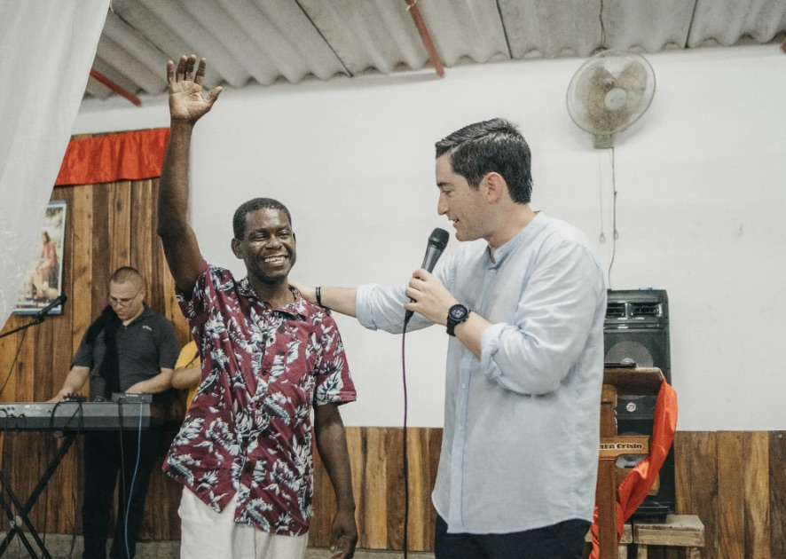
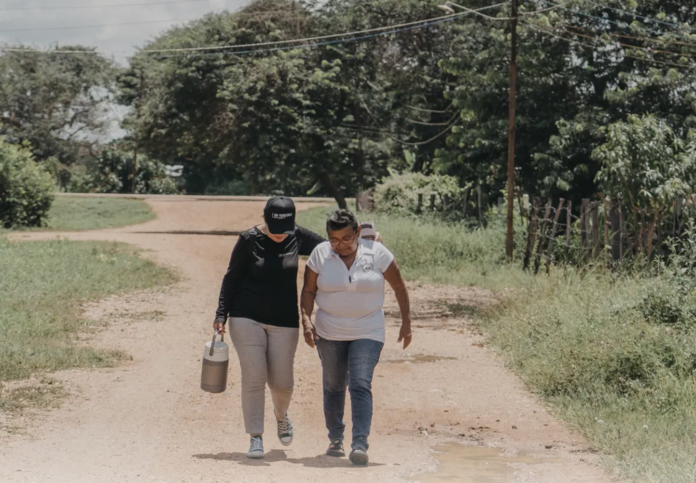
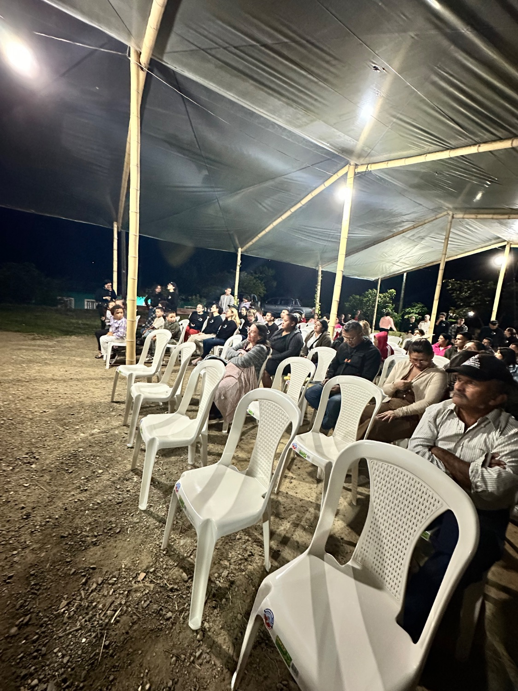
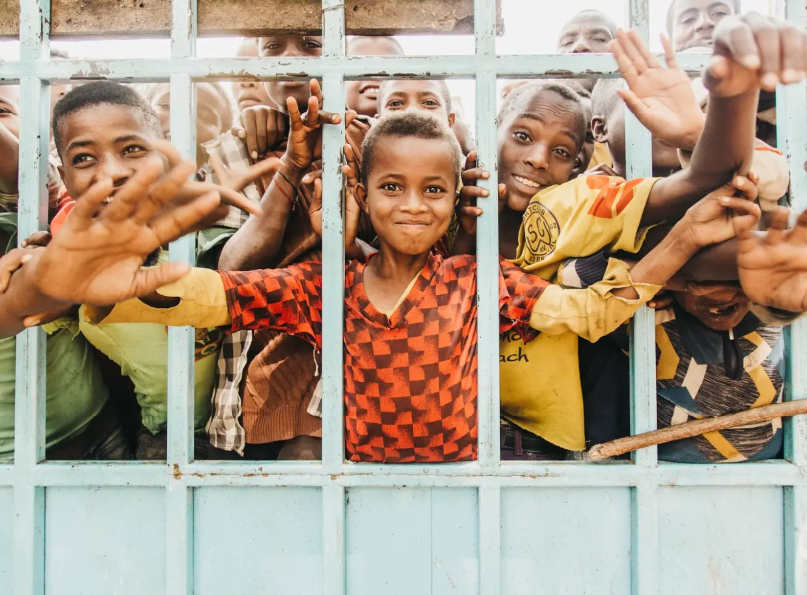
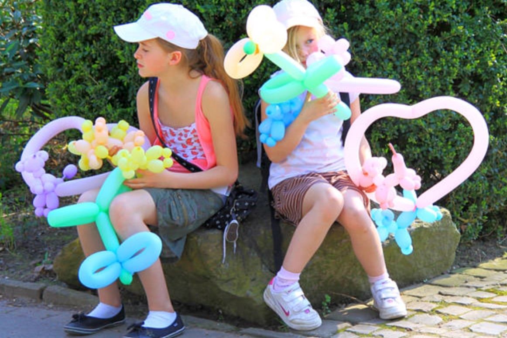

Servir a los niños no es “entretenerlos” mientras los adultos viven la reunión “de verdad”. Es una de las misiones más estratégicas y eternas que existen. Jesús no toleró a los niños: los puso en el centro, los abrazó y declaró que el Reino les pertenece.
Este manual es tu compañero para enseñar, incluir y cuidar a cada niño —del más pequeño al joven— con excelencia y con amor. Aquí no hay solo teoría: cada sección une la Palabra de Dios con herramientas pedagógicas que puedes aplicar hoy mismo, en el campo misionero o en tu iglesia.

En el norte de Transvaal, Sudáfrica, el evangelista Reinhard Bonnke realizó una pequeña cruzada en un campo abierto rodeado de altísima maleza. Al terminar la reunión apagaron los generadores y todo quedó en completa oscuridad. Entonces un joven de 17 años, llamado David, detuvo su vehículo en el camino.
Cada niño es creación valiosa de Dios, con un lugar y un llamado. Incluir a un niño con discapacidad no es hacerle un favor: es darle el espacio que ya le pertenece. Estas pautas te ayudan a recibir, comprender y acompañar a cada uno según lo que necesita.

Los niños con discapacidad «incluyen a aquellos que tengan deficiencias físicas, mentales, intelectuales o sensoriales a largo plazo que, al interactuar con diversas barreras, puedan impedir su participación plena y efectiva en la sociedad, en igualdad de condiciones con los demás».
DAES, ONU (2023) · Son un grupo muy diverso, con experiencias de vida muy diferentes — UNICEF (2023).
Cada niño es distinto, pero estas pautas generales te ayudan a incluir a cada uno. Ante la duda, pregunta siempre a la familia.
Antes que cualquier técnica, el niño aprende de quién eres. Tu vida es la primera lección — y la que más recuerdan. El maestro misionero no necesita ser perfecto, pero sí coherente, disponible y lleno del amor de Dios.
Cada edad ve, siente y aprende distinto. Enseñar bien empieza por conocer a quién tienes enfrente y hablarle en su idioma. Conoce las etapas para llegar a su corazón.
La atención no se exige, se gana. Un niño aburrido no es un niño malo: es una clase que necesita cambiar. La regla de oro: un minuto de atención por cada año de edad — luego, cambia de actividad.
Antes, durante o después de las actividades, algunos niños y jóvenes muestran comportamientos que piden toda nuestra atención: aislamiento, agresión, llanto repentino, dispersión, ataques de pánico o ansiedad. Cuando algo se sale de lo normal, es nuestra responsabilidad abordarlo y cubrirlo — no solo en lo espiritual, sino con escucha activa, empatía, quitando toda culpa que se atribuya y dándole palabras de afirmación.
Este es un primer abordaje, corto y de contención: el niño busca ayuda y ha confiado en ti. En misiones quizá sea la única vez que lo veas, por eso cada gesto cuenta — y el nombre de Jesús tiene autoridad para traer paz a su vida hoy.
Disciplinar no es castigar: es discipular. El objetivo no es un niño que obedezca por miedo, sino un corazón que aprenda a elegir el bien. La disciplina firme y amorosa da seguridad.
En misiones casi nunca repites público: muchas veces solo tienes UNA oportunidad con ese niño. Por eso cada enseñanza debe ser un encuentro, no una clase. Estos cinco elementos te ayudan a que la Palabra quede sembrada para siempre.

Jesús, el mejor Maestro, enseñó contando historias. Una buena narración no se lee: se vive. Cuando un niño “ve” la historia, la recuerda para toda la vida.
El juego es el lenguaje natural del niño, y la alabanza, el latido de la clase. A través del canto y del juego, la verdad entra sin esfuerzo y se queda para siempre.

Las manos también predican. La globoflexia y el pintacaritas convierten una clase en una fiesta y abren el corazón de cualquier niño. Aquí tienes lo esencial para empezar hoy.

Orar no es un trámite para cerrar la clase: es enseñarle al niño a hablar con su Padre. Los niños oran con una fe asombrosa cuando les damos confianza y ejemplo.
Cuidar a los niños es un acto sagrado y una responsabilidad seria. Un ministerio infantil seguro protege al niño, al maestro y a toda la iglesia. Estas normas no son opcionales.
Tú tienes al niño una hora; sus padres o cuidadores, toda la semana. El mayor impacto ocurre cuando trabajas CON la familia, no aparte de ella. Eres un aliado, no un reemplazo.
Los niños preguntan lo que muchos adultos callan: “¿Dónde está mi mascota que murió?”, “¿Por qué pasan cosas malas?”, “¿Cómo sé que Dios existe?”. No temas estas preguntas: son puertas abiertas al corazón.
La excelencia está en los detalles. Esta lista te ayuda a no olvidar nada — imprímela, pégala en tu salón y revísala cada semana.
Un error común es pensar: “cuando crezcan entenderán” o “son muy pequeños para recibir de Dios”. La Palabra enseña lo contrario: los niños no son cristianos del futuro, son creyentes de hoy.
En misiones no movemos a los niños por emociones ni por técnicas: dependemos del Espíritu Santo y usamos el nombre de Jesús con autoridad. Palabra y Espíritu, juntos, transforman vidas en un instante.
¿Jesús sana hoy? Sí. Y los niños pueden recibir su sanidad y también orar por otros con una fe sencilla y poderosa. No necesitan entenderlo todo: solo creer en Aquel que sana.
Un niño no es demasiado pequeño para que Dios lo use. Puede evangelizar, orar por enfermos y ganar a su propia familia. En misiones, los niños que alcanzamos hoy pueden convertirse en los misioneros de su comunidad mañana.
Estamos creando esta sección. Vamos una por una para que cada tema quede completo, con sus versículos y herramientas pedagógicas. Dime y la desarrollamos ahora.